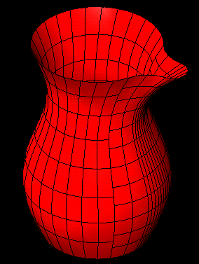
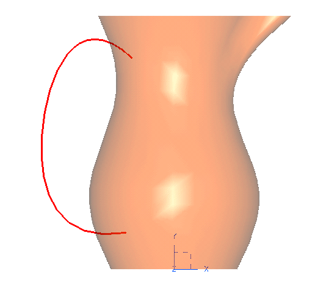
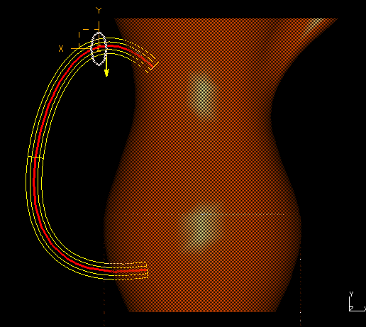

Technical Marketing MS5 Vignettes - VGx Jug (that is Pitcher for Americans) :-)
This VGx example shows the use of Variational Shape Design to help shape the
center line of a swept handle on a pitcher.
Model file :- VGx_vignettes.mf*
Before

After

Begin vignette

Get the Jug/Pitcher part to the workbench.
Sketch on the XY plane of the coordinate system.
Create a spline with about 4-6 points.
NOTE:- DO NOT constrain the through points.


Sketch on the Workplane.
Add an Ellipse. Location is not important.
Make the ellipse about the proportion seen in the diagram.


Drag the spline. Don't get any sharp corners.
 

Sweep the Ellipse down the spline path.
Use the preview to confirm your selection.
Ensure the Endcaps is ON and the Protrude is selected.

Tech Tips
You can extend this example by adding dimensions to control the spline end
point, add lines to control the spline end tangents, add through points and
dimensionally control them etc etc.